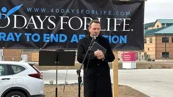

When eight-year-old Romeo Mosser began beating his small, digital drum set at the closing ceremony of the first local spring 40 Days for Life event on March 29, Bonnie Spies, sidewalk coordinator, couldn’t stop smiling.
“I’m distracted by his joy,” she said, nodding toward the mini musician, who, with his father, Tim, led inspirational tunes for the event, helping evoke a spirit of celebration from the back of a pickup truck.
The opening songs were only the beginning of the good news about to be revealed.
Spies recounted details of the “save” that happened on the vigil’s first day, as noted in last month’s issue of New Earth, before handing the microphone to sidewalk advocate Ginger Kallander, who told of another “hopeful but not confirmed” potential save the week prior.
A father had come with his significant other, not knowing, apparently, what kind of an appointment it was, but he quickly realized something was up, and approached the advocates, asking, “What is this place anyway?” she recounted. After learning it was an abortion clinic, he retrieved the mom and they got into their vehicle and exited. On the way out, he had some terse words with the abortion escorts, accusing them of lying to him.
“I don’t know what happened after that,” Kallander said, “but praise God, that baby drove out of the driveway alive!”
Bishop Andrew Cozzens, shepherd of the Crookston Diocese—the closing ceremony’s special guest—then advanced to the makeshift, outdoor stage, mentioning first the congruency between the 40 Days for Life campaign and the 40 days of Lent just past, and how “the Lenten sacrifice is an imitation of Jesus’ sacrifice and 40 days in the desert, where he went out to do battle with the devil.”

Likewise, he said, “This is the place where we know that the enemy has a lot of power in the world, and so we come here to witness to Jesus and to his life, and give thanks for it, and to continue that struggle—which Jesus desires—the struggle against evil.”
The bishop then began telling of a woman who was 20 weeks pregnant when her water broke and had to be hospitalized. “The next morning, the doctor came in and said, ‘I’m sorry to inform you that the child in your womb is severely deformed, and I think we should induce labor,’ which would have been effectively an abortion at this point.”
Being Catholic, he said, the woman said she didn’t care if her baby had deformities, because he was a gift from God. “You don’t understand,” the doctor replied, as the bishop shared. “This child is a freak.” To which the woman replied, “You don’t understand. I want a new doctor.”
From there, she was placed in the care of a retired physician, a specialist, and put on bedrest. But because the new doctor wasn’t covered under her health insurance, he suggested they strike a deal with the first doctor; that if the baby were to come out healthy, he’d have to pay the bill, and if deformed, he’d cover it.
The child was born about a month early, Bishop Cozzens said, but was healthy except for some allergies. “Go get the other doctor and let him come see this freak,” the new doctor said, admiring the beautiful newborn.
“You might have figured out by now that that baby was me,” Bishop Cozzens said. “And that woman was my mother.” He’s heard the story many times, he said, and because of that, and how his life “almost didn’t happen,” he’s “always had this place in my heart for the prolife movement and importance of it.”
In fact, he said, when he became a bishop in 2013, one newspaper headline reported, “Freak becomes bishop,” and went viral, becoming translated into Italian as, “Il mostro diventa un vescovo.” “I got emails from all around the world when I was named a bishop.”
“Of course,” he added, “what that woman would do is what any of you would do—which is, simply, love the child God gives us,” no matter its health status. “That’s actually secondary to the truth that we know—which is the dignity of a human life.”
He continued, “That’s why we stand here today, praying that our culture would just recognize the dignity of a human life. That’s a dignity that’s inalienable, we say, because it comes from God.”
In this Culture of Death in which we find ourselves, he remarked, death becomes an acceptable solution to problems, but death is never a solution to problems. “Life is always God’s choice, and always God’s solution.”
Bishop Cozzens then read the prologue of St. John’s Gospel, and after the closing prayer and blessing, the band played on, with little Romeo at the drums, smiling away.
[Note: I write about my experiences praying for the end to abortion at the sidewalk abutting the Red River Valley’s lone abortion facility for New Earth magazine — the official news publication of the Fargo Diocese. I hope you find “Sidewalk Stories” helpful in understanding the truth about abortion and how it plays out tragically in our corner of the world. The preceding ran in New Earth’s May 2026 issue.]